Наука · журнал «ДентАрт» 2020 №2
Тактика щодо нижніх третіх молярів при ретромолярній остеотомії нижньої щелепи
Tactic for Lower Third Molars in Patients with Bilateral Sagittal Split Osteotomy (BSSO)
Тактика щодо третіх молярів — одне з найбільш «незручних» запитань у стоматології. Глибина цього питання на кшталт шекспірівському «бути чи не бути?» У стоматологічній інтерпретації це звучить так: «Видаляти чи не видаляти?»
Щодо третіх молярів існує велика кількість міфів і неоднаковою мірою обґрунтованих теорій, які визначають різні тактичні підходи, що регламентують лікувальну тактику. При цьому у фахівців існує велика кількість розбіжностей — як принципових, так і локальних, що стосуються інтерпретацій одних і тих самих фактів.
Ще заплутаніша історія в ситуації, коли потрібно виробити тактику щодо третіх молярів при проведенні реконструктивних операцій з приводу порушень прикусу. Складність полягає в безпосередній близькості площини остеотомії до лунки третього моляра. На верхній щелепі в умовах пластичнішої кісткової тканини це не настільки критично. А ось щодо нижніх третіх молярів при ретромолярній остеотомії нижньої щелепи питання стоїть гостро (рис. 1).
Головна причина цього, на нашу думку, полягає в очевидній логічності взаємозв'язку поширеного явища — рецидиву порушення прикусу і щадної тактики щодо третього моляра. Механізм настільки ж логічний: поширення тиску в щільних компактизованих структурах ретромолярної зони. Є одне істотне «АЛЕ»: ці міркування будуються на малообґрунтованих гіпотезах, які часто сприймаються за аксіому.
Залежно від того, які параметри обираються як визначальні, тактика може докорінно відрізнятися.1-6 Так, існує думка, що прорізування і наявність третього моляра сприяють рецидиву мезіального прикусу. Логічна рекомендація профілактичного видалення нижніх третіх молярів при мезіальному прикусі. Інший підхід: визначення тактики в залежності від перспективи прорізування або витягування нижнього третього моляра. Найбільш несприятливі умови складаються при недорозвиненні нижньої щелепи, яка формує дистальний прикус. У результаті бачимо одну й ту саму рекомендацію — видалення третіх молярів нижньої щелепи, але при початково абсолютно протилежних ситуаціях.
Якщо визначальним фактором обрати тиск, що створюється зубним зачатком у процесі прорізування, то треті моляри з несформованими коренями, які перебувають на стадії прорізування, підлягають видаленню. Якщо відштовхуватися від доцільності збереження зуба, то всі варіанти аномального положення і дефіциту місця передбачають екстракцію.
Не менш цікаве питання — визначення термінів видалення нижнього третього моляра та остеотомії нижньої щелепи. Якщо рішення про видалення прийнято, то існують два принципово різних підходи: видалення одночасно з остеотомією та етапне втручання — видалення і остеотомія з інтервалом від 2 до 6 місяців.
Обґрунтувань поділу операцій на етапи чимало. Але вони дуже суб'єктивні: визначаються знову ж таки принципами і поглядами, яких дотримується лікар. На нашу думку, єдине беззаперечне (абсолютне) з них — положення зуба, яке виключає можливість проведення остеотомії, не зачіпаючи третій моляр або його зачаток.
Є підхід, при якому на перше місце ставляться умови для загоєння кісткової рани після остеотомії: за часткової ретенції після операції зберігається з'єднання ротової порожнини з лункою зуба і щілиною остеотомії. Це потенційно підвищує ризик інфекційно-запальних ускладнень. Відтак за часткової ретенції виправдане попереднє видалення, а після загоєння лунки та елімінації епітеліального вистилання фолікулярної оболонки — основне втручання — остеотомія.
Матеріали і методи
За період з жовтня 1998 р. по травень 2014 р. у клініці ЩЛХ ПСПбДМУ і на відділенні пластичної хірургії СПІК було прооперовано 614 пацієнтів з поєднаними зубощелепними аномаліями. Інтраопераційне видалення нижнього третього моляра зроблено 36 пацієнтам (5,86% випадків).
Техніка операції. Вибір виду оперативного доступу здійснюється в залежності від положення нижнього третього маляра. У разі повної ретенції виконується доступ уздовж переднього краю гілки нижньої щелепи з продовженням по нижньому зводу переддвер'я до рівня першого моляра. При цьому не слід зміщуватися більше 3-4 мм латеральніше від прикріплених ясен. Це, з одного боку, створить зручні умови для ушивання рани, а з другого — не буде погіршувати огляд операційної рани в зоні ретенованого зуба (фото 1). За часткової ретенції оптимальним є кутоподібний доступ, аналогічний використовуваному при екстракції ретенованих нижніх третіх молярів. Використовуючи цей доступ, маємо можливість гарного огляду, санації лунки від фолікулярного епітелію і надійного герметичного ушивання кісткової порожнини мобілізованим зі щоки слизово-окісним клаптем (фото 2).
Після розпилу може бути кілька варіантів співвідношення нижнього третього моляра і площини розпилу (рис. 2):
- зуб поза площиною (2.1);
- корінь зуба оголений, але верхівка кореня/-ів зберегла кістковий покрив (2.2);
- корінь зуба оголений, верхівка кореня/-ів вистоїть у щілину остеотомії (2.3);
- зуб пошкоджений (розпиляний) (2.4).
У першому і другому випадках хірургічних показань до видалення немає. За наявності ортодонтичних показань до видалення молярів реципрокною пилкою робляться два вертикальних розпилювання компактної кістки ретромолярної зони (фото 3.1-3). Распатором Прічарда або прямим елеватором видаляється кістковий фрагмент, що покриває нижній третій моляр (фото 3.4). Люксаційними рухами інструмента, заведеного під верхівку кореня, робиться вивихування зуба в щілину остеотомії у краніальному напрямку (фото 3.5).
При видаленні категорично неприпустиме вивихування зуба в дистальному напрямку, як це буває при традиційному видаленні частково ретенованих третіх молярів. Після остеотомії внутрішня компактна пластинка ретромолярної зони зберігає зв'язок із серединним фрагментом лише в зоні лунки нижнього третього моляра (фото 4). Грубі маніпуляції при видаленні зуба здатні призвести до надлому ретромолярного фрагмента, тому навантаження може докладатися тільки у вестибулярному або вертикальному напрямку.
При третій клінічній ситуації видалення рекомендоване з огляду на порушення вітальності пульпи. Завдання додатково спрощене за рахунок візуалізації верхівки кореня. При прямих коренях конічної форми і вертикальній орієнтації зуба дуже зручним буває видавлювання його з лунки в напрямку ротової порожнини за рахунок докладання тиску в зону верхівки кореня (фото 5.1). Зуб піднімається вище оклюзійної площини. Слід звернути увагу на потребу попереднього відшарування слизової оболонки від шийки зуба (фото 5.2), щоб запобігти її розриву.
У випадках розпилу нижнього третього моляра (четверта клінічна ситуація) слід видалити фрагмент/и верхівки кореня з проксимального фрагмента щелепи (фото 6.1-3), а щодо коронкової частини можна спробувати застосувати той же люксаційний прийом. Якщо такий підхід виявиться неефективним, доцільна фрагментація ретенованого зуба або застосування вже описаної методики видалення зовнішньої компактної стінки лунки.
Видалення зачатка або третього моляра з несформованими коренями — простіше завдання з огляду на простішу анатомію, менші розміри третього моляра і, відповідно, менший кістковий дефект, що виникає після видалення (фото 7).
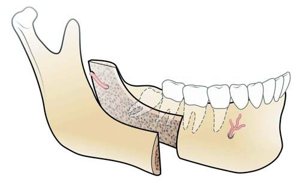
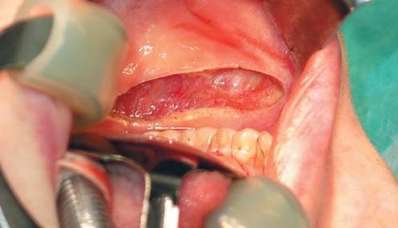
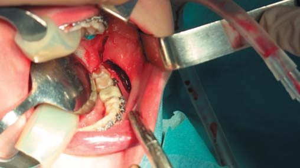
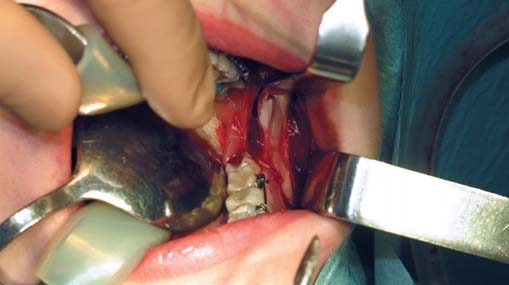
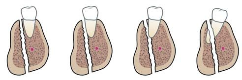
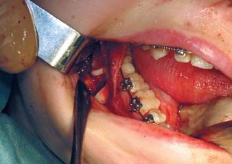
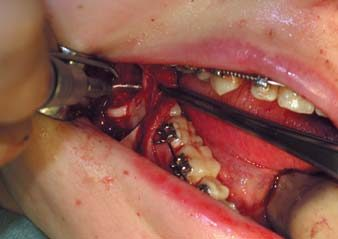
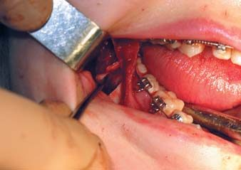
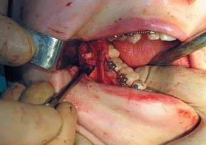
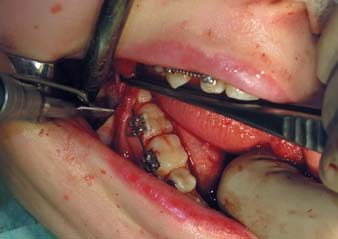
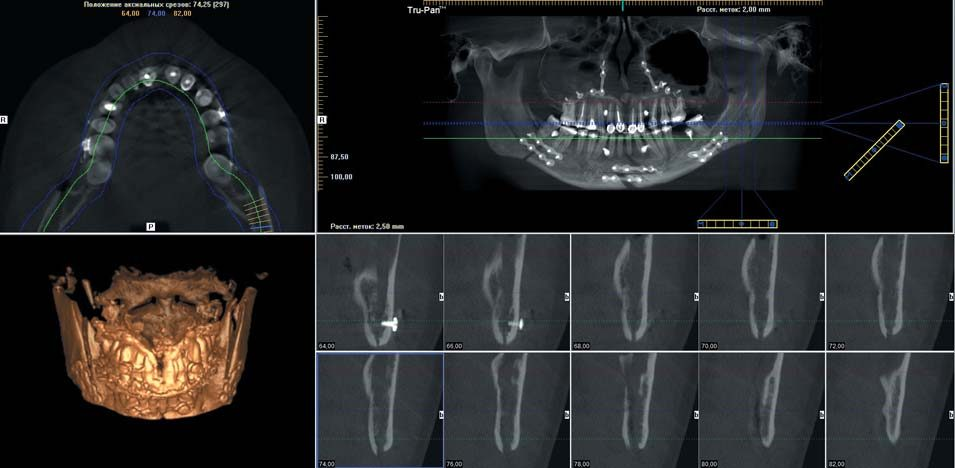
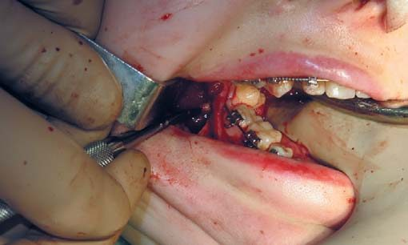
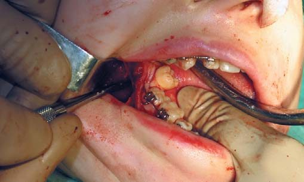


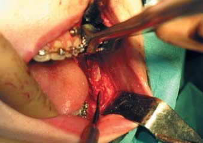
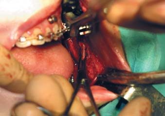
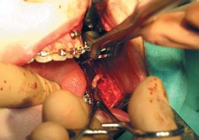
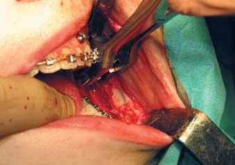
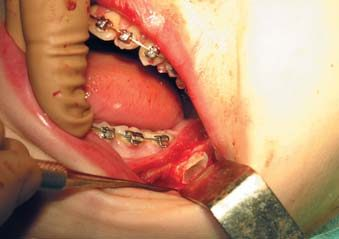
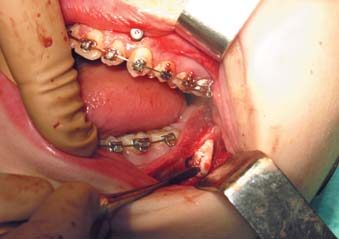
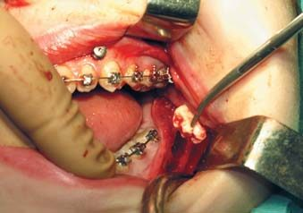
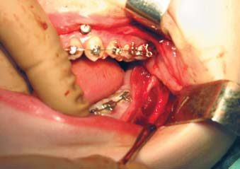
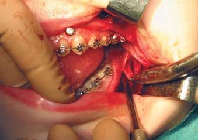
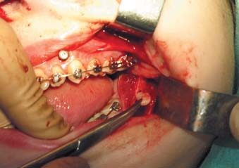
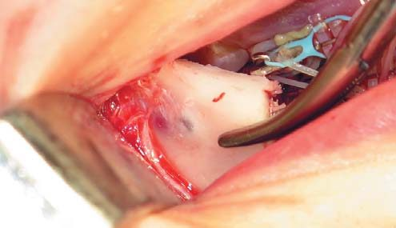
Результати та обговорення
На наш погляд, причин частого видалення нижніх третіх молярів при аномалії їх положення дві. Перша (суб'єктивна) — часто висловлюване побажання з боку ортодонта про симультанне видалення з огляду на «неперспективність» такого зуба. Друга (об'єктивна) — вища ймовірність оголення верхівки кореня третього моляра в щілині остеотомії або його пошкодження при розпилюванні.
Двостороннє видалення було в 46% випадків (12 чол.), одностороннє — в 54% (14 чол.), з яких 39% лівобічних і 15% правобічних. Ми вважаємо, що це пов'язано з технікою проведення операції. Роблячи остеотомію, ми не змінюємо положення щодо операційного столу: хірург, оперуючи, стоїть праворуч. При виконанні сагітального компонента остеотомії реципрокною пилкою з правого боку легше проконтролювати паралельність розпилу і зовнішнього компактного шару. Ліворуч, через гірший огляд, розпил, як правило, виходить більш зміщеним у товщу губчастої кістки. При цьому підвищується ризик пошкодження третього моляра. У половині випадків (6 пацієнтів) нижній третій моляр з протилежного боку був відсутній.
Корені видалених нижніх третіх молярів були сформовані в 69% випадків (18 чол.). У 31% випадків (8 чол.) — не сформовані. Це пов'язано з віковою структурою пацієнтів нашої вибірки.
При оцінці результатів ми використовували кілька критеріїв:
- умови для загоєння кісткової рани;
- ризик розвитку інфекційно-запальних ускладнень;
- ризик несанкціонованого (невдалого) перелому кістки;
- ризик ушкодження нижньолуночкового нерва;
- умови для остеосинтезу фрагментів нижньої щелепи.
Підвищена увага до збільшення контакту кісткових поверхонь і зменшення кісткового дефекту традиційна для травматології. У щелепно-лицьовій та ортогнатичній хірургії яскравим прихильником цієї ідеї є проф. В. А. Сукачов, творчість якого пройнята прагненням оптимізувати умови для загоєння кісткової рани.7 Однак подальші дослідження в цьому напрямку засвідчили, що регенераторний потенціал тканин щелепно-лицьової ділянки дозволяє отримувати стабільні результати, також і за наявності діастазу між кістковими поверхнями. Нам жодного разу не довелося зіткнутися з випадками несправжнього суглоба або погіршеної регенерації кістки. Це дозволяє стверджувати, що наявність кісткової порожнини (лунки), пов'язаної з площиною остеотомії, не чинить істотного, клінічно значущого негативного впливу на процес загоєння кісткової рани.
У жодному випадку нам не зустрілося інфекційно-запальних ускладнень у випадках симультанного видалення та остеотомії нижньої щелепи. У той же час, як засвідчили проведені нами раніше дослідження,8 при остеотомії у пацієнтів з кінцевими дефектами нижнього зубного ряду ймовірність травматичного остеомієліту зростає. Ми вважаємо, що це пов'язано зі склеротичними змінами кістки і закриттям періодонто-періостальних анастомозів у тих сегментах щелепи, які втратили зуби.9 У світлі сказаного, профілактичне етапне видалення третього моляра може негативно вплинути на процес заживлення.8
Як уже говорилося раніше, при симультанному видаленні нам зустрічалися випадки «несанкціонованого» перелому щелепи. Слід зазначити, що йдеться про підломлення внутрішньої компактної пластинки, яка не використовується для остеосинтезу, тому на кінцевий результат це не зробило істотного впливу. Із застереженням, яке часто зустрічається в літературі, — про проходження площини остеотомії в небажаному напрямку через неможливість виконати пропили згідно з хірургічним протоколом з огляду на наявність ретенованого зуба — ми не зустрілися жодного разу. Допускаємо можливість виникнення такого ускладнення при використанні обертового бору для кортикотомії, а при проведенні розщеплення — долота. Хоча у нас під час застосування цієї техніки такого ускладнення не сталося. Сьогодні при активному використанні реципрокної пилки, гадаємо, ймовірність цього ускладнення виключається: площина розщеплення зумовлюється напрямом площини розпилу кістки, виконаного на всю довжину леза пилки (фото 8).
Ризик пошкодження нижньолуночкового судинно-нервового пучка при симультанному видаленні менший. Як правило, пучок проходить нижче верхівок коренів нижнього третього моляра: при розщепленні пучок легко лоціюється і візуалізується (фото 9). Ми не спостерігали випадків ушкодження судинно-нервового пучка при симультанному видаленні.
Для виконання остеосинтезу наявність великої кісткової порожнини може стати обмежуючим фактором. У такій ситуації використання бікортикальних шурупів буває утрудненим. Це вимагає або зсуву шурупів дистально чи нижче, або застосування монокортикального остеосинтезу.
Підтвердженням обґрунтованості описаної тактики10 щодо третіх молярів може бути клінічне спостереження, подане на блоці фото 10.
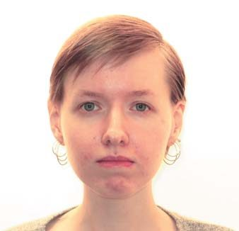
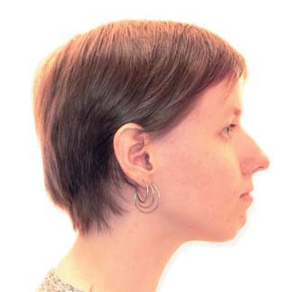
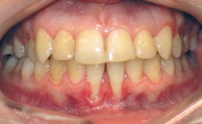
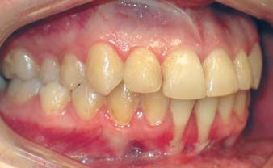
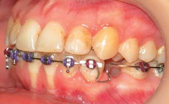
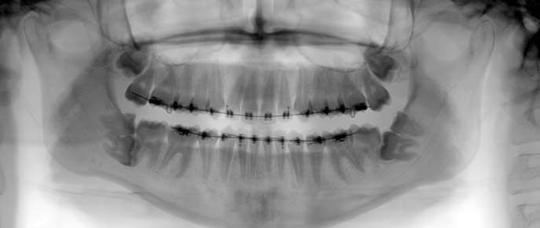
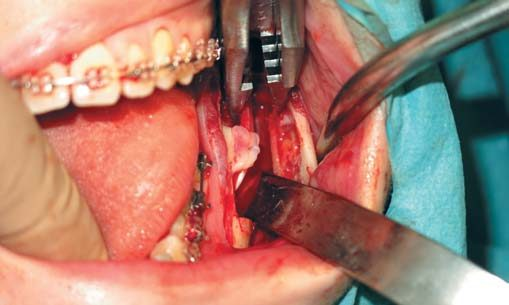
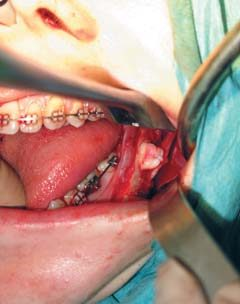
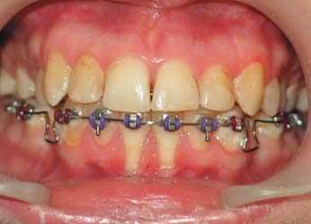
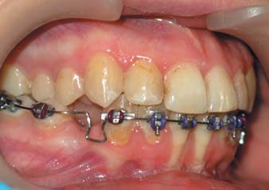
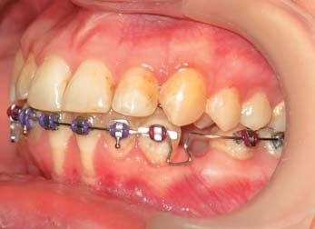
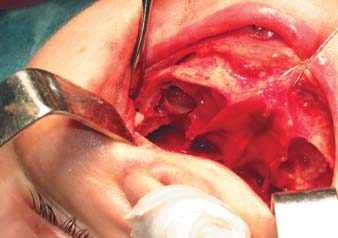
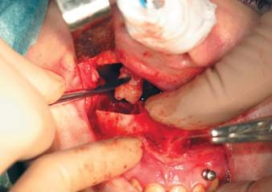
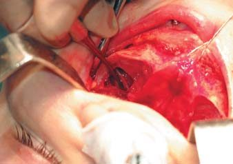
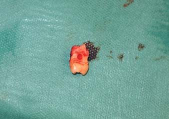
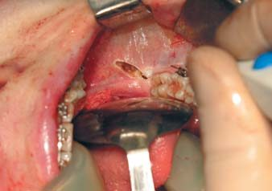
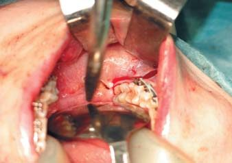
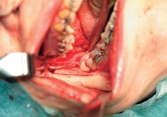
Проведено ортодонтичну підготовку з видаленням зубів 34 і 44 та дисталізацією передніх зубів. Вирівняні зубні ряди: лікування доведено до етапу повнорозмірних сталевих дуг.
Проведена операція — двощелепна остеотомія. При виконанні остеотомії верхньої щелепи після її мобілізації з боку верхньощелепної пазухи візуалізовані вибухання, що відповідають зубам 18 і 28. Крупноабразивним кулястим бором обпиляно кістку навколо зуба. Просвердлено отвір в середині зуба для введення елеватора. Люксаційними рухами видалено моляр. Вилущена фолікулярна оболонка.
Викроєні кутоподібні доступи. При остеотомії нижньої щелепи пропил робився ближче до коронок частково ретенованих молярів для збереження достатньої товщини компактного шару дистального фрагмента та оголення ретенованих молярів. Нижні ретеновані моляри, розташовані в більш м'якій губчастій кістці, видалені люксаційними рухами в напрямку площини остеотомії. Паралельними розпилами видалена компактна кістка, прилегла до шийок розташованих згори ретенованих молярів. Просвердлено отвір для введення робочої частини елеватора.
Вилучені фолікулярні оболонки. На внутрішньому фрагменті розташована велика кісткова постекстракційна порожнина. Зважаючи на це, проведено остеосинтез двома паралельними міні-пластинками (бікортикальний остеосинтез може бути неспроможний). Вилучено шість молярів — 4 комплектних (третіх) і 2 надкомплектних (четвертих). Отримано гарний естетичний результат і стабільну оклюзію.
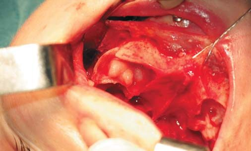
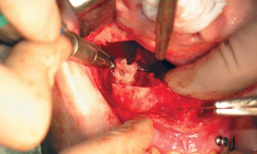
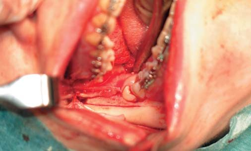
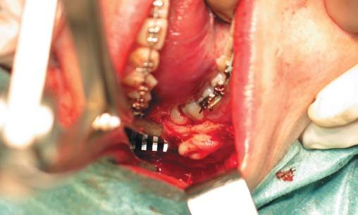
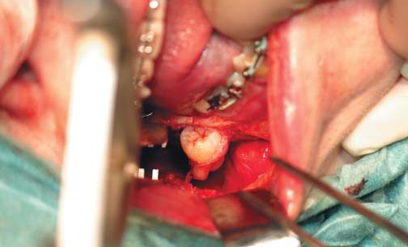
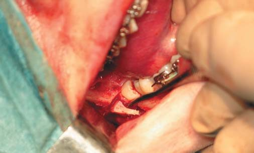
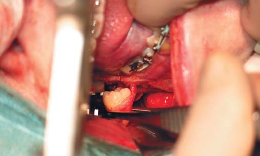
Це клінічне спостереження наочно демонструє обґрунтованість симультанного видалення ретенованих третіх (і не тільки третіх) молярів при остеотомії щелеп. Виділення видалення в окремий хірургічний етап зажадало б самостійного травматичного втручання з непростим реабілітаційним періодом. А проведення подальшої реконструктивної операції було б сильно ускладнене протягом тривалого часу.
Висновки
Узагальнюючи двадцятирічний досвід проведення реконструктивних операцій, слід сказати, що ми не виявили перешкод для остеотомії нижньої щелепи, пов'язаних з наявністю третіх молярів. Збереження нижнього третього моляра не впливає на стабільність результату.
У низці випадків виникає необхідність інтраопераційного видалення третього моляра. Ця операція в разі дбайливого поводження з оточуючими кістковими структурами може бути виконана легко. Симультанне видалення не впливає на загоєння і виникнення інфекційно-запальних ускладнень. Поєднання остеотомії нижньої щелепи і видалення не впливає на стабільність отриманих результатів.
Нам видається, що жорстка регламентація тактики щодо третіх молярів при остеотомії нижньої щелепи не має під собою наукового обґрунтування. Тактика повинна бути гнучкою в залежності від клінічної ситуації, запитів пацієнта і його ортодонта. Симультанне втручання трохи подовжує і ускладнює операцію, але кінцевий результат того вартий: пацієнтові доведеться пройти лише через одне оперативне втручання і одну реабілітацію. На тлі остеотомії складне і травматичне видалення ретенованого зуба минає непоміченим.
Таке втручання вимагає високого рівня хірургічних навичок і акуратнішої хірургічної техніки.
Література
- Волков И. Г., Андреищев А. Р. Алгоритм лечебной тактики в отношении третьих моляров // Стоматология детского возраста и профилактика. — 2010. — №2. — С. 66-70.
- Андреищев А. Р., Волков И. Г. Значение прорезывания третьих моляров для формирования мезиального прикуса. Рентгеноцефалометрические параметры формирующегося и сформированного мезиального прикуса. (Часть 1) // Институт стоматологии. — 2004. — №4. — С. 40-43.
- Соловьев М. М., Андреищев А. Р. Взаимосвязь прорезывания верхних третьих моляров и формирования мезиального прикуса // Стоматология. — 2005. — №3. — С. 54-57.
- Андреищев А. Р., Герасимов С. Н. Тактика в отношении нижних третьих моляров у пациентов с формирующимся мезиальным прикусом. (Часть 2) // Институт стоматологии. — 2005. — №4. — С. 82-84.
- Соловьев М. М., Волков И. Г., Андреищев А. Р., Ко В. Ю. Сравнительный анализ частоты и структуры осложнений инфекционно-воспалительного характера, патогенетически связанных с молярами верхней и нижней челюсти // Пародонтология. — 2008. — №4 (49). — С. 62-65.
- Андреищев А. Р. Осложнения, связанные с нижними третьими молярами. (Патогенез, клиника, лечение). Дисс. канд. мед. наук. — СПб., 2005. — 274 с.
- Сукачев В. А. Атлас реконструктивных операций на челюстях. М.: «Медицина», 1984.
- Соловьев М. М., Андреищев А. Р., Ко В. Ю. Сравнение эффективности методик остеотомии нижней челюсти по Dal Pont и Obwegeser // Стоматология детского возраста и профилактика. — 2006. — № 1-2. — С. 16-23.
- Галецкий Д. В. Оценка эффективности различных методов хирургического лечения одонтогенных кист челюстей // Дисс. …канд. мед. наук. СПб., 2003. — 162 с.
- Соловьев М. М., Андреищев А. Р. Тактика в отношении нижних третьих моляров при проведении остеотомии нижней челюсти у пациентов с сочетанными зубочелюстно-лицевыми аномалиями. // Стоматология. — 2003. — №6. — С. 34-37.